FWD — an innovation event for 10,000 people across 7 locations, built around a single idea: light means movement. A creative lead and an eight-person design team built the identity and the film. I ran the day itself.
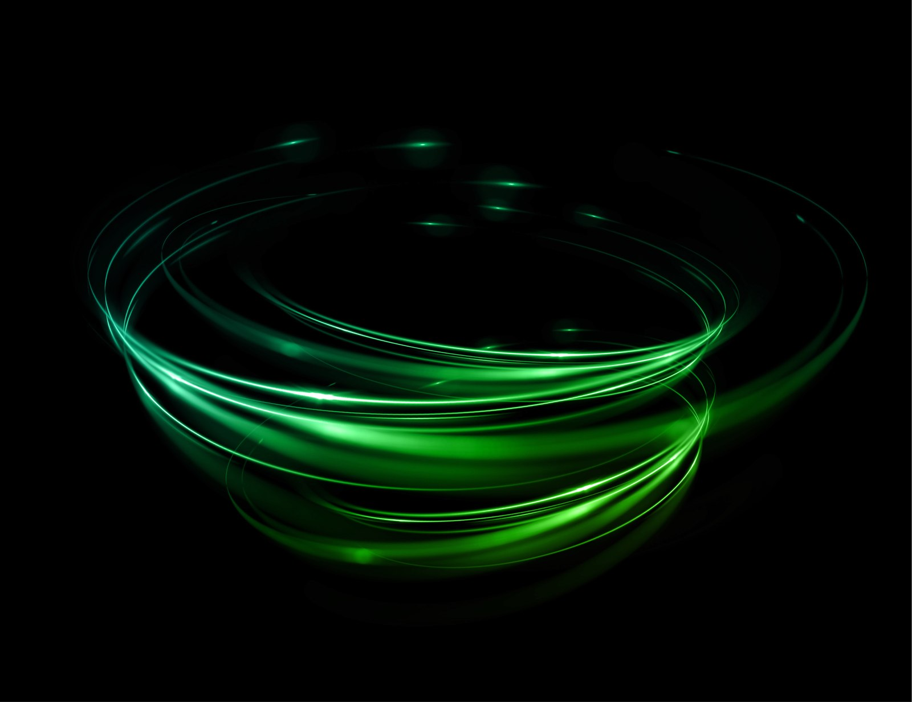
One day. Everyone who had a hand in the firm's innovation work that year — employees, alliance partners, and the startups they'd backed — in one room, watching it get celebrated at once.
“Whenever we say light, it means movement. Movement at an unbelievable pace. Light makes things visible — not only visually, but otherwise. Making us aware to inquire more. Look around more. Look inside us. Look beyond. With the light coming from inside us.”
The creative brief — set by the creative lead and design team
The emailer campaign and every standee on the floor — all designed by the creative lead and the eight-person team working under them. My job was to make sure it all arrived on time and got installed right.
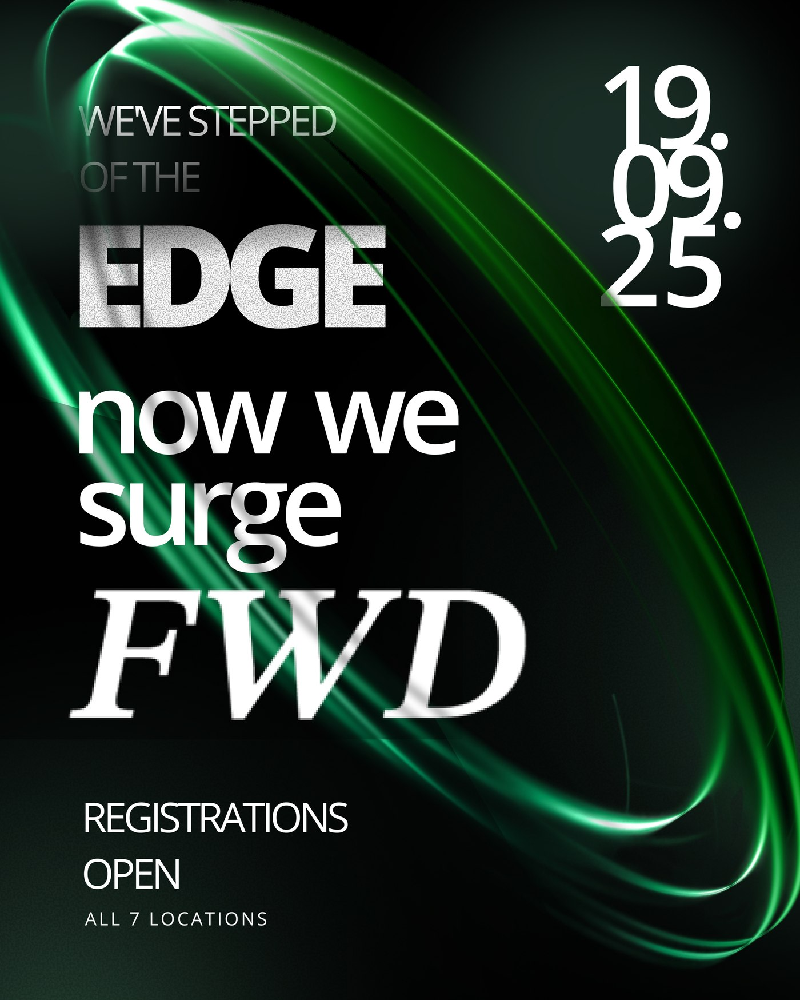
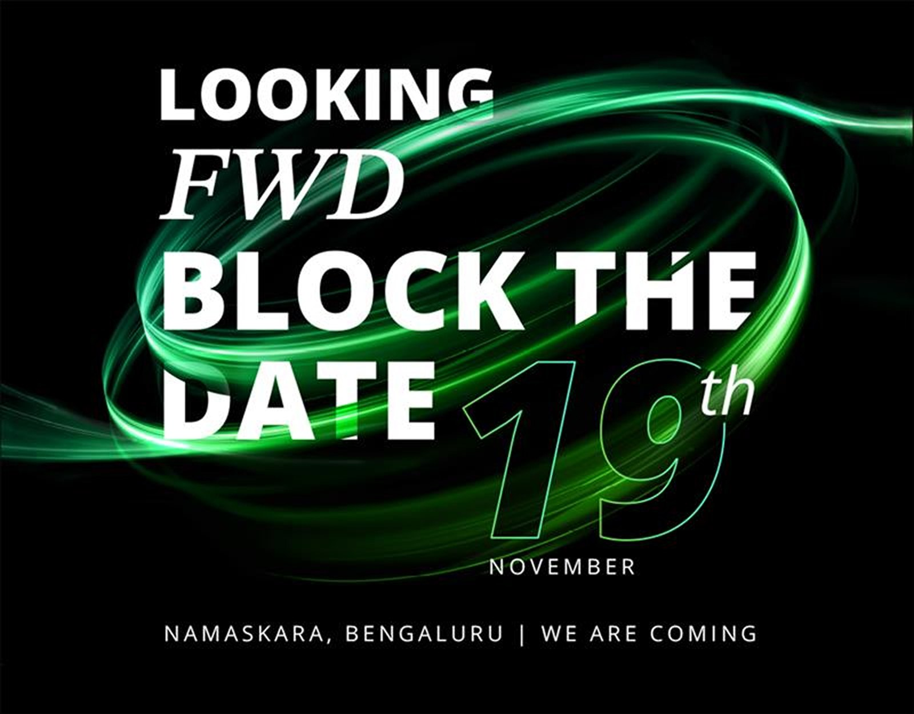
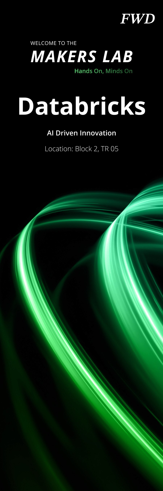
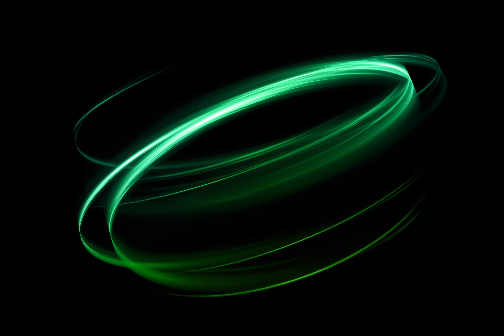
Every badge carried the same system — a name, a speaker number, a topic — so 10,000 people could be personally addressed at once. This one is mine.
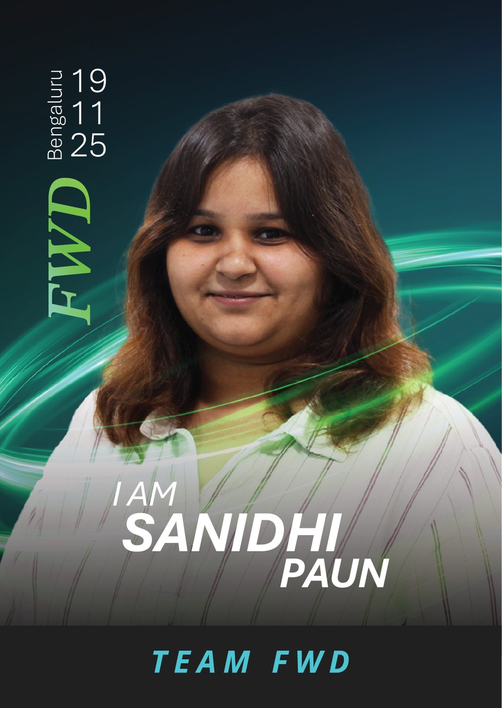
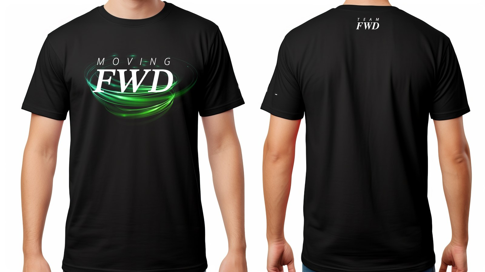
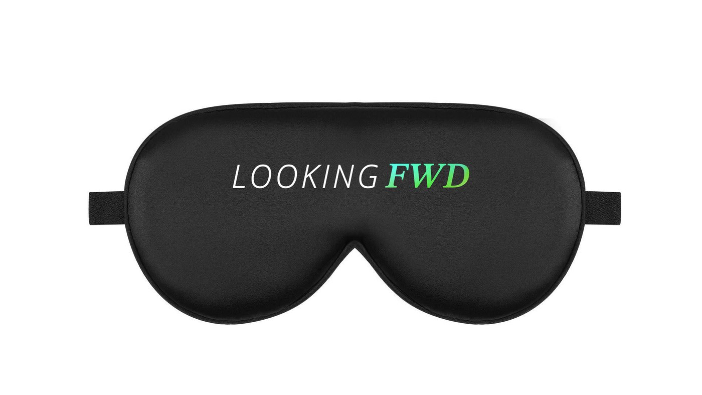
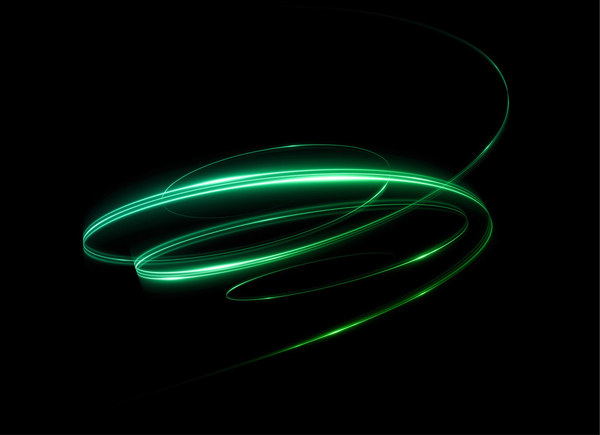
Vendor management. Every slide that came up, called from the back of the room. Sound and light coordination. Delegating across eight-plus designers so nothing collided on the day. Less design, more show-calling — the job was making sure ten thousand people never saw a single seam.
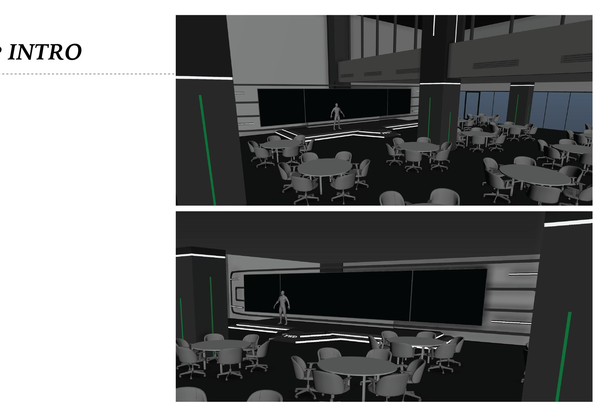
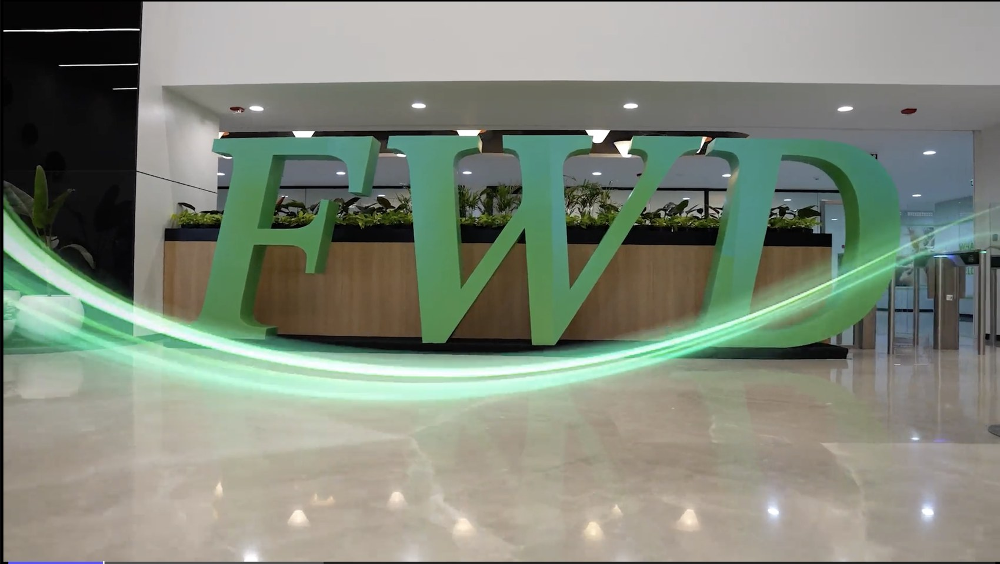
Made by the creative team, shot and animated around the same idea as everything else — light as movement, wrapped around the people in the room.
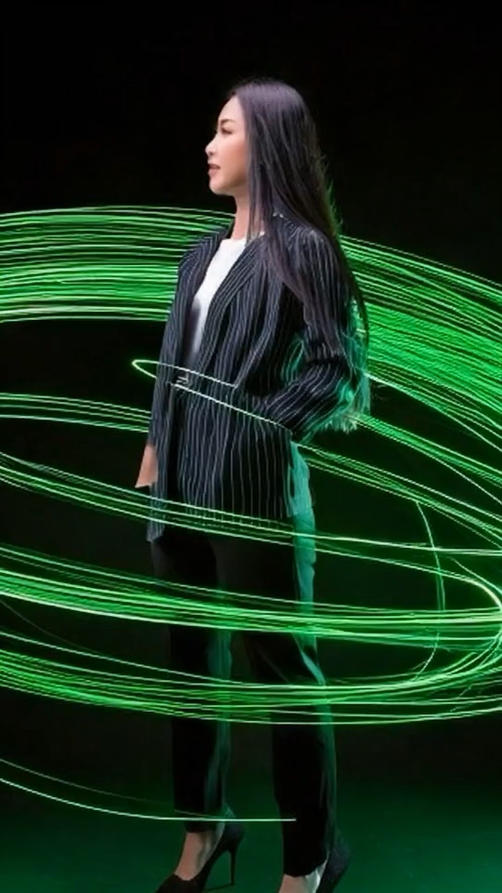
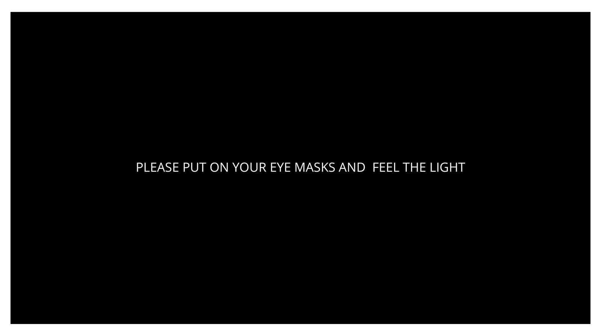
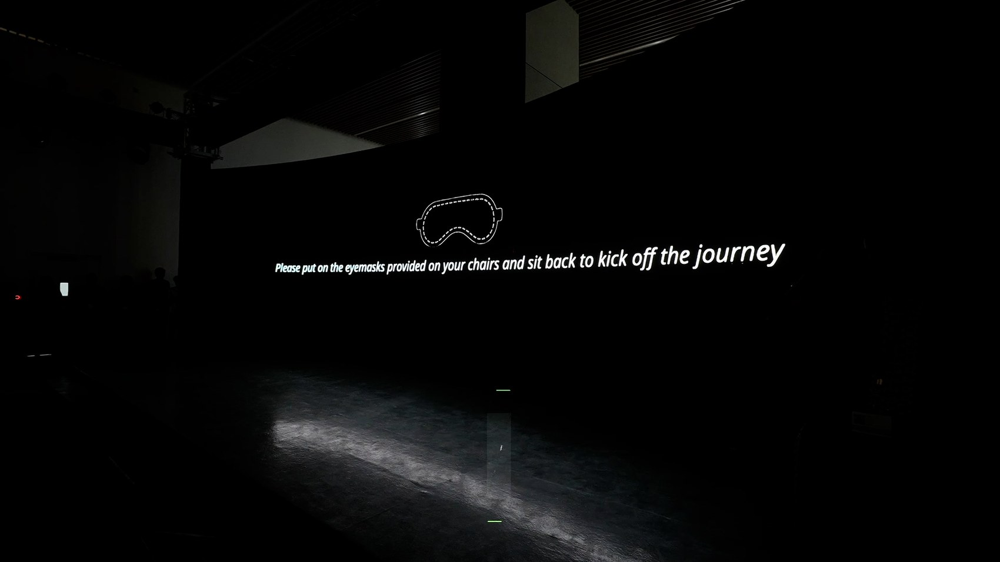
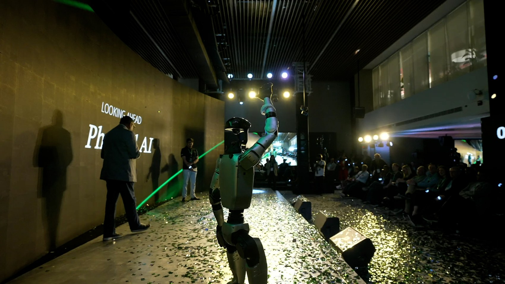
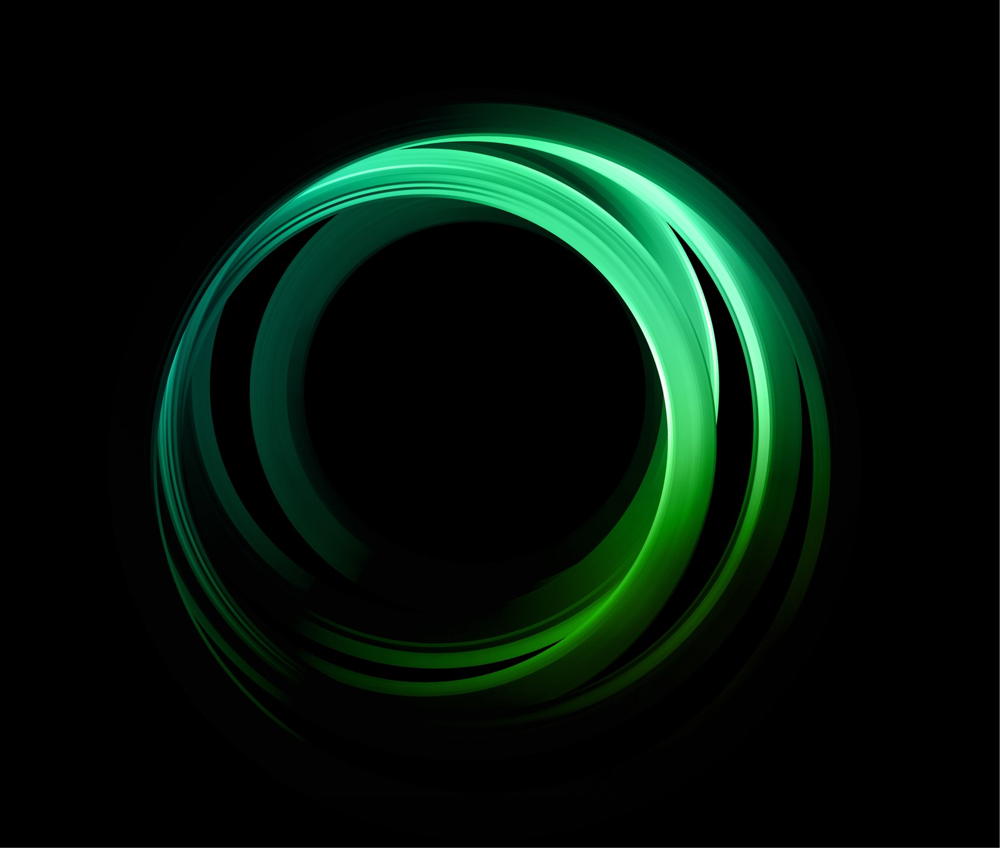